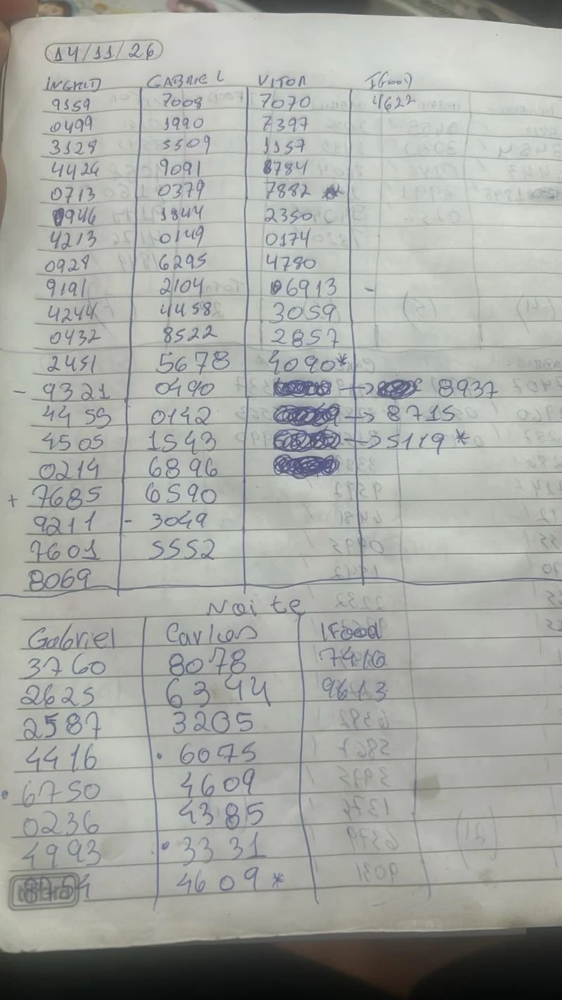
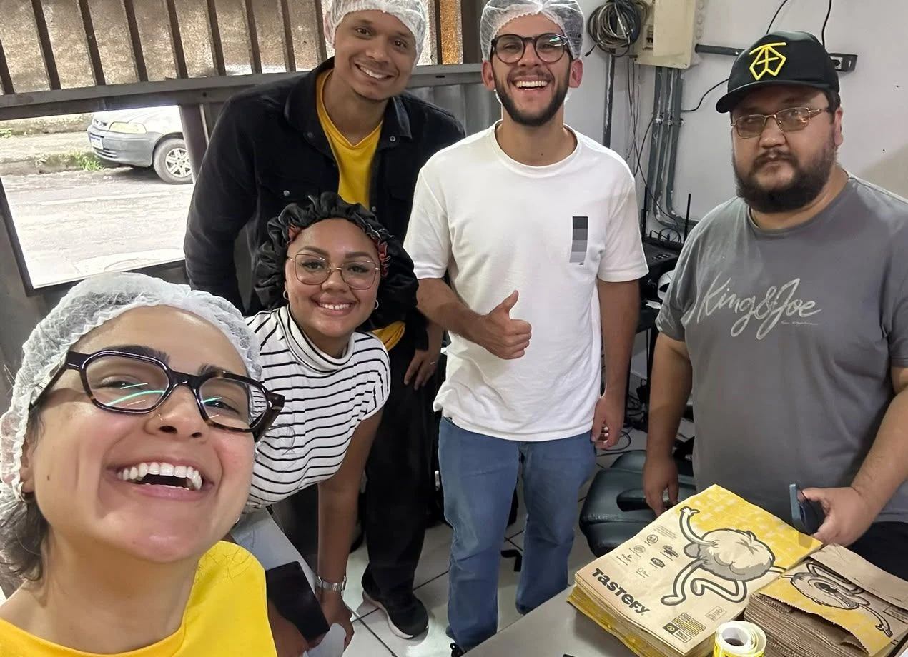
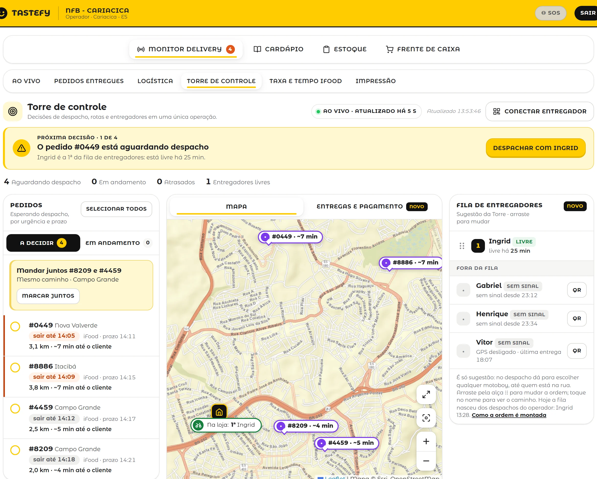
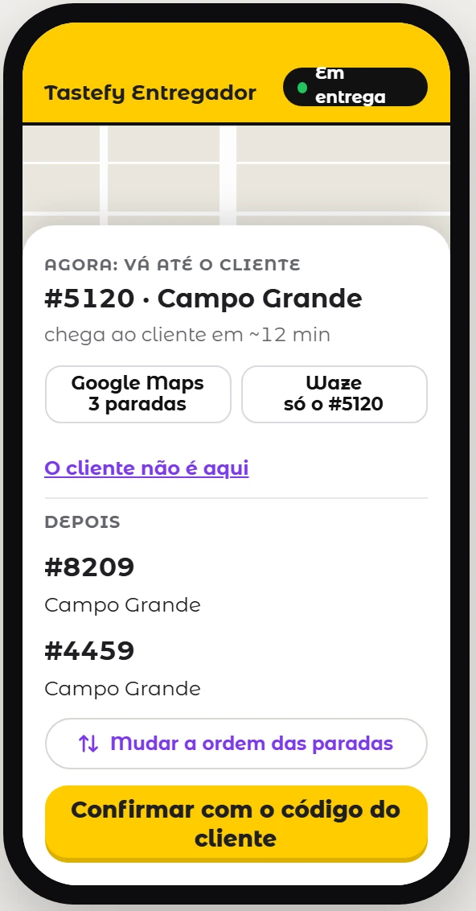
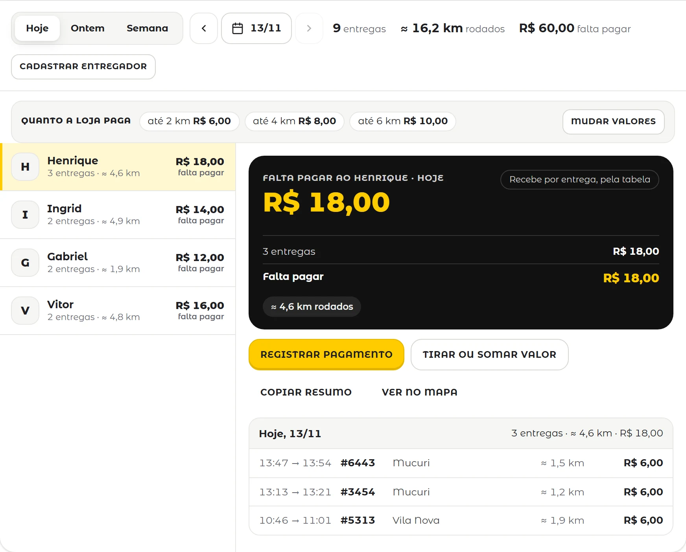

role ou aperte ↓
Desafio Raio-X da Loja · final 17/11
Do cadernoà Torre.
NFB Cariacica · Julia Lopes e Luiz Gonçalves

A dor
Quase 70 pedidos.
À mão.
Num dia só.
Uma coluna por motoboy, uma linha por pedido, com rasura e seta quando o pedido trocava de mão.
- Quem levou o pedido?
- Quanto pagar a cada motoboy?
- Onde ele está agora?
- Quando ele volta?
Nenhum sistema sabia responder.

A loja
12/11 · 10h42
a primeira entrega
pela Torre.
Hoje, três coisas.
Uma torre. Um app. O fim do caderno.
Não são três coisas. É uma só.
Um sistema da Tastefy, feito para a operação, dentro do Tastefy One.
Controle das entregas em poucos cliques.


Como funciona na loja
O pedido cai na fila
Todo pedido de entrega própria aparece em "A decidir".
A Torre sugere
O próximo motoboy da fila e os pedidos que vão juntos.
O celular toca
Mesmo com o app fechado. O motoboy aceita.
Rota no mapa
GPS, hora de chegar ao cliente e de voltar à loja.
Volta e recebe
Entra de novo na fila. A entrega vai para o pagamento pela faixa de km.
Rotas reais
Domingo, 15/11.
Almoço.
GPS dos motoboys a cada 30 s, gravado pela Tastefy Entrega. Destinos arredondados para cerca de 100 m.
O teste · na operação real desde 12/11
no app em 5 dias
aceitar a entrega
confirmado no app
Tastefy One · 12/11 10h42 a 16/11 13h · 6 motoboys · aceite em mediana · 247 de 307 com código
Antes e depois

Quem levou, que horas saiu e entregou, quantos km e quanto pagar: tudo registrado, todo dia.
Instalar o app uma vez.
Tecnologia, com o Gonçalves.
Toda NFB que migrar para o One.
Ah, e mais uma coisa.
88
comandos para uma IA,
nos 10 dias do desafio.
Do Gonçalves, da Tecnologia.
Do caderno à Torre.
Obrigado. Julia Lopes e Luiz Gonçalves.